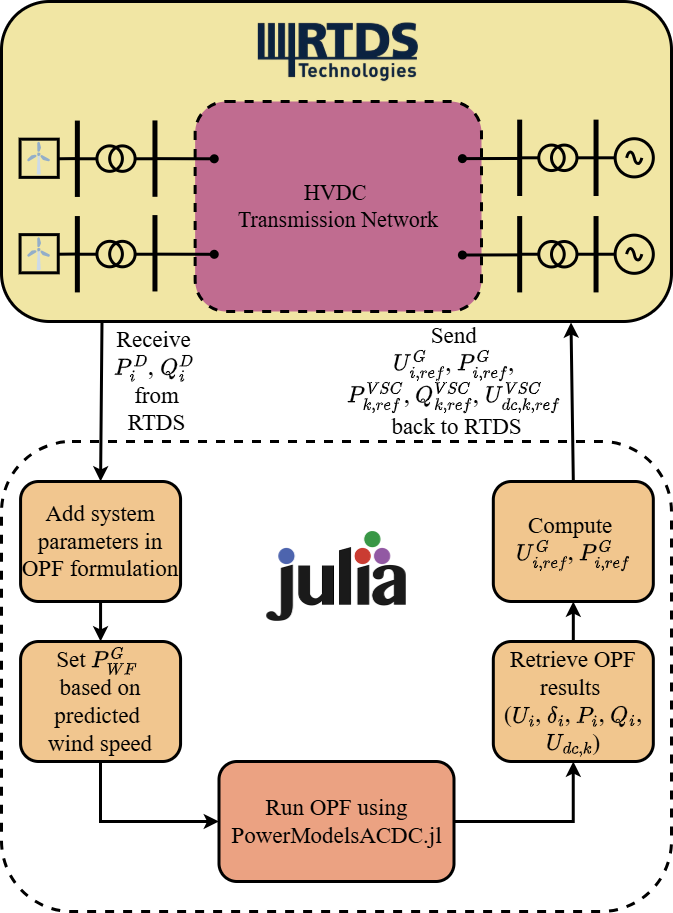

Hardware · Product · Operational
DC Grid Controller (DCGC)
Modular control-centre layer for interoperable DC grid control (SCADA/EMS/LFC/scheduling functions).
Hardware · Product · Operational
Modular control-centre layer for interoperable DC grid control (SCADA/EMS/LFC/scheduling functions).
DCGC acts as a control-centre layer for DC grids: modular provision of SCADA, EMS-like grid calculations, load-frequency control, scheduling and related functions with interoperability by design.
The grid-calculation layer is implemented as a closed optimal-power-flow (OPF) loop between the RTDS real-time simulator and Julia. Measured loads are streamed from RTDS, the OPF is solved with PMACDC-HD (a hybrid AC/DC OPF package based on PowerModelsACDC.jl), and the resulting generator and VSC set-points are returned to RTDS. Hybrid AC/DC OPF formulations from ACDC_OPF (ACDC-OpFlow) provide the grid models.
